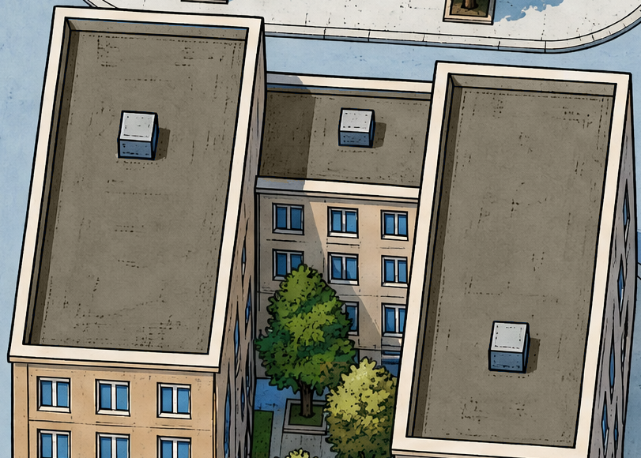
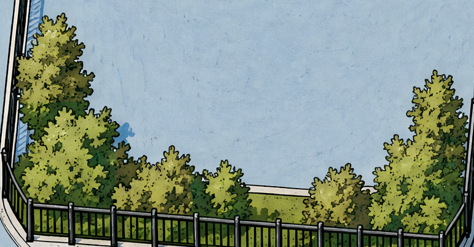
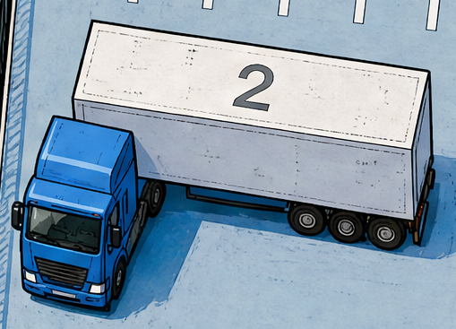
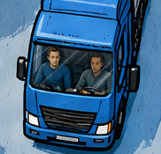

Только цвет: тёплые серо-бежевые крыши и первые жёлто-охристые оттенки в зелёной листве. Девушка, грузовики и рисунок сохранены.
{kind=link}
{kind=link}
Цвет и сохранённые детали
14 / 15 одним файлом ↗{kind=link}

{kind=link}

{kind=link}

{kind=link}

Крупные планы относятся к версии 15 и не меняются при переключении карты.
Что изменено и что сохранено
Только синие плоскости крыш стали тёплыми серо-бежевыми. Их фактура, тональные переходы и контуры сохранены; оборудование не перекрашено. В листве появились сдержанные жёлто-охристые оттенки, при этом зелёный остаётся основным цветом. Улицы, фасады, грузовики и экипаж не изменены. Новых генераций и деформаций нет.
Девушка не перерисована и не перекрашена. Как в версии 14, крупная фигура внутри карты служит для сравнения стиля; маленькая стоит у бизнес-центра. На телефоне увеличьте карту для проверки мелких деталей.
Карта 15 с девушкой, PNG · Карта без фигур, PNG · Исходная девушка · Происхождение · Проверка изображения · Проверка браузера
{kind=link}
{kind=link}
{kind=link}